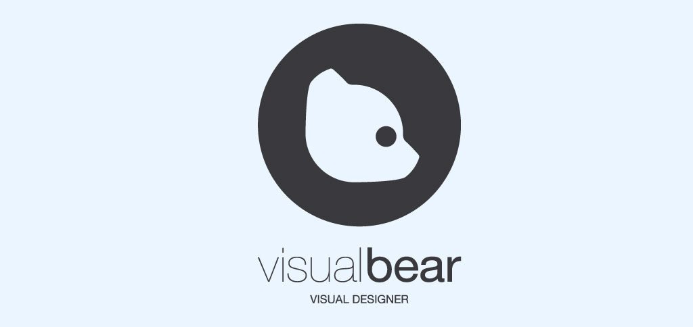
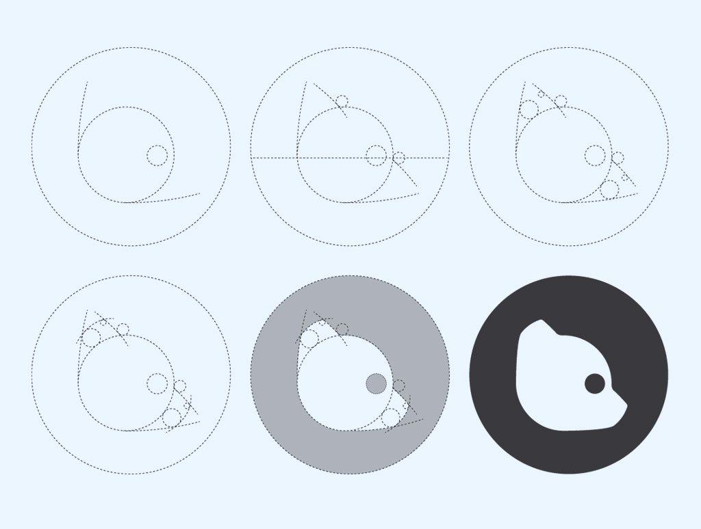
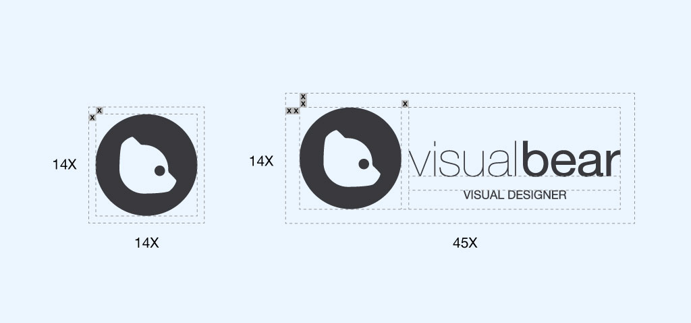
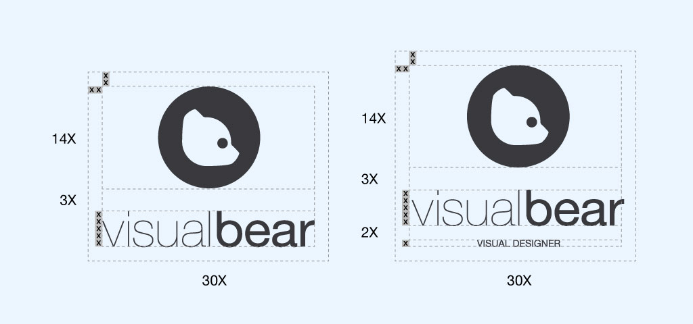
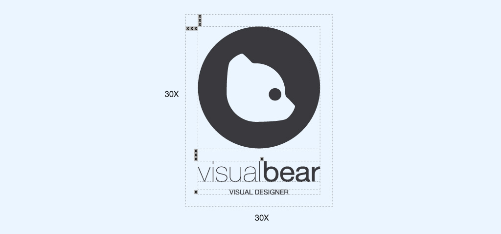
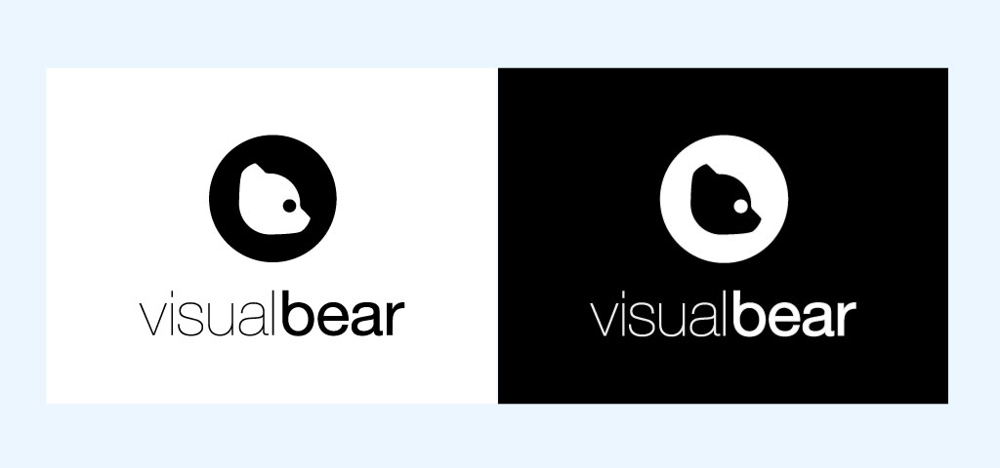
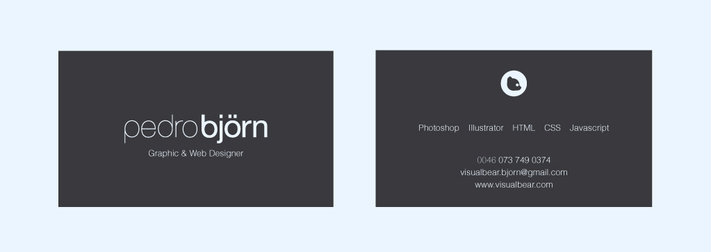
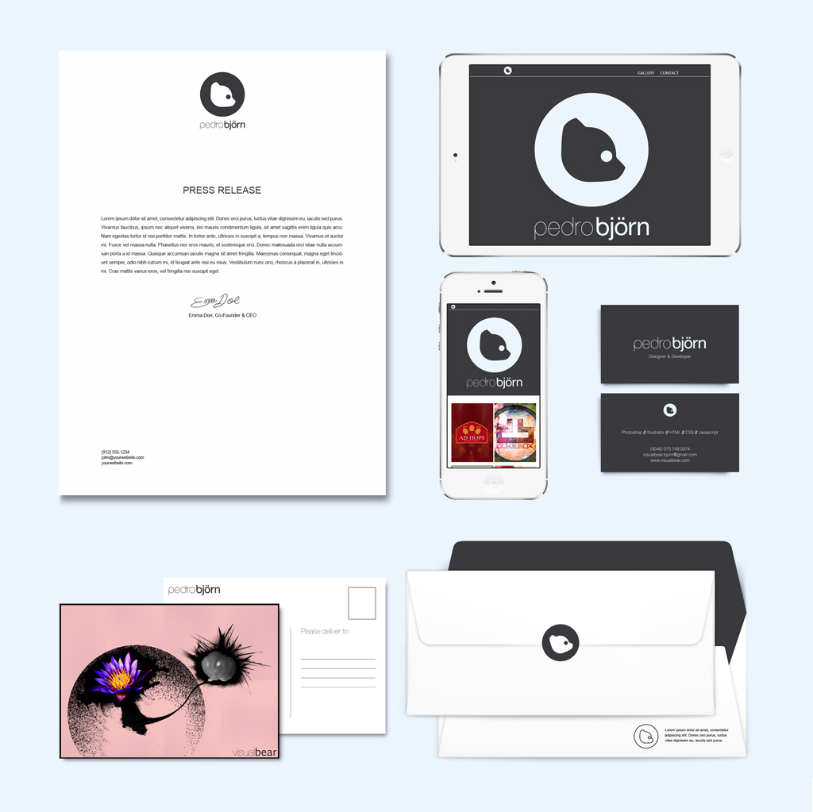

<section class="section section-top-padding" id="visualbear_container">
<article class="gallery-container">
	<div class="image_container">
		<div  class=" center">
			<span   class="header-image v-align" id="visualbear">
				<div class=" header-block box">
					<h0>Visualbear</h0>
					<h3 class="subtitle">Brand Design</h3>
				</div>
			</span>
		</div>
	</div>
	<div class="container">
		<div class="gallery-text">
			<p>The objective was to define an identity for my web presence,
				but also as an excercise in designing an identity, from logo to website,
			with an element of freedom.</p>
			<p>Focusing on the central aspect of "björn" (bear in Swedish, and also my last name),
				the emphasis on the word "bear" and the logo tie it all together.
				The dark grey contrasting with the blue are selected due to their contrast that's
			less harsh than simply black on white.</p>
			<p>You can also check out the <a href="../styleguide" alt="Styleguide Link"> websites styleguide  </a> to 
			get a better idea of the work done to construct this website.</p>
		</div>
		<div class="col-xs-12 gallery-image">
			
			
			
			
			
			
			
			
			
			
		</div>
	</div>
</article>
</section>